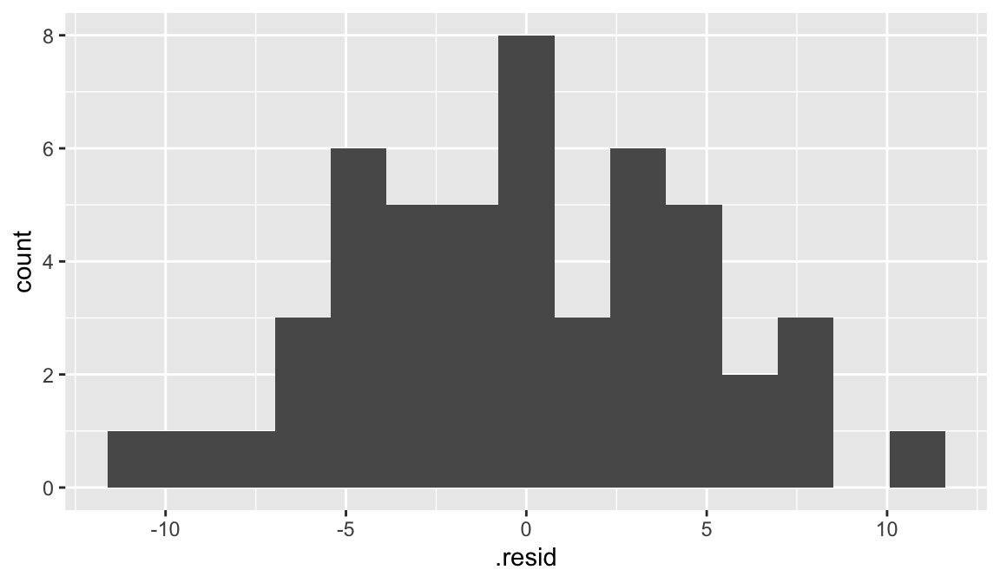

library(tidyverse)
library(openintro)Linear regression in R
lm() function
The function that will obtain the coefficients for the least-squares line is the lm() function. The syntax is as follows:
lm(response ~ explanatory, data)
Example: elmhurst data
Let’s once again consider the elmhurst data from openintro, where we want to fit the model
\[\text{gift aid} = \beta_{0} + \beta_{1} \times \text{income} + \epsilon\]
What does this look like in R?
lm(gift_aid ~ family_income, data = elmhurst)Note that the variables have to be spelled as they appear in the data frame!
The output from this line of code is:
Call:
lm(formula = gift_aid ~ family_income, data = elmhurst)
Coefficients:
(Intercept) family_income
24.31933 -0.04307 This isn’t the most informative of output, so what we will do is use an additional function called summary() that will give us much more information!
We will first store the output from lm() as a variable called elmhurst_lm:
elmhurst_lm <- lm(gift_aid ~ family_income, data = elmhurst)Then we will use the summary() function and pass in the linear model:
summary(elmhurst_lm)
Call:
lm(formula = gift_aid ~ family_income, data = elmhurst)
Residuals:
Min 1Q Median 3Q Max
-10.1128 -3.6234 -0.2161 3.1587 11.5707
Coefficients:
Estimate Std. Error t value Pr(>|t|)
(Intercept) 24.31933 1.29145 18.831 < 2e-16 ***
family_income -0.04307 0.01081 -3.985 0.000229 ***
---
Signif. codes: 0 '***' 0.001 '**' 0.01 '*' 0.05 '.' 0.1 ' ' 1
Residual standard error: 4.783 on 48 degrees of freedom
Multiple R-squared: 0.2486, Adjusted R-squared: 0.2329
F-statistic: 15.88 on 1 and 48 DF, p-value: 0.0002289There’s a lot more information here! We can now see the \(b_{0}\) and \(b_{1}\) estimates, along with some extra information. In particular, the “Multiple R-squared” quantity is the coefficient of determination \(R^2\)!
Sometimes we just want the coefficients. The coef() function will output the coefficients as a vector. These can be nice for reproducibility and in-line code:
coef(elmhurst_lm) (Intercept) family_income
24.31932901 -0.04307165 Pretty output using broom
The broom package has a function that turns the output from lm() into tidy, data frame form. We simply pass in the fitted model into the function of interest!
Install the package either by typing install.packages("broom") in your Console, or in the Packages pane.
tidy()
The function tidy() turns the information about the coefficients into a nice data frame:
library(broom)
tidy(elmhurst_lm)# A tibble: 2 × 5
term estimate std.error statistic p.value
<chr> <dbl> <dbl> <dbl> <dbl>
1 (Intercept) 24.3 1.29 18.8 8.28e-24
2 family_income -0.0431 0.0108 -3.98 2.29e- 4Since this is in data frame form, each column is a variable, and all of our dplyr wrangling functions work!
tidy(elmhurst_lm) |>
pull(estimate)[1] 24.31932901 -0.04307165glance()
The function glance() turns the extra information about the model fit into nice data frame:
glance(elmhurst_lm)# A tibble: 1 × 12
r.squared adj.r.squared sigma statistic p.value df logLik AIC BIC
<dbl> <dbl> <dbl> <dbl> <dbl> <dbl> <dbl> <dbl> <dbl>
1 0.249 0.233 4.78 15.9 0.000229 1 -148. 302. 308.
# ℹ 3 more variables: deviance <dbl>, df.residual <int>, nobs <int>glance(elmhurst_lm) |>
pull(r.squared)[1] 0.2485582augment()
The function augment() takes a fitted SLR model input, and combines the x and y variables from the original data frame (i.e. family_income and gift_aid) with extra variables whose values come from the model fit
augment(elmhurst_lm) |>
slice(1:3)# A tibble: 3 × 8
gift_aid family_income .fitted .resid .hat .sigma .cooksd .std.resid
<dbl> <dbl> <dbl> <dbl> <dbl> <dbl> <dbl> <dbl>
1 21.7 92.9 20.3 1.40 0.0204 4.83 0.000915 0.296
2 27.5 0.25 24.3 3.16 0.0727 4.81 0.0185 0.686
3 27.8 53.1 22.0 5.72 0.0321 4.76 0.0245 1.22 You can see we have the new variables:
.fitted: the fitted (estimated) values \(\hat{y}\) for the corresponding observation.resid: the residual for the observation
The periods are important!
We can use the output from augment to plot histogram of residuals:
augment(elmhurst_lm) |>
ggplot(aes(x = .resid)) +
geom_histogram(bins = 15)